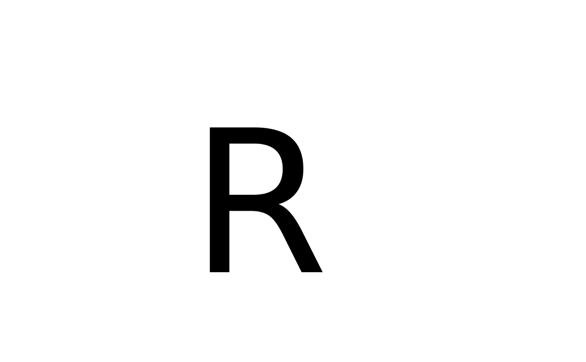

Not all glyphs are encoded as vector outlines (emojis often not). Even for
fonts that provide an outline you might be interested in a raster version.
This function gives you just that. It converts a glyph into an optimized
raster object that can be plotted with e.g. graphics::rasterImage() or
grid::grid.raster(). For convenience, you can also use
glyph_raster_grob() for plotting the result.
Arguments
- glyph
The index of the glyph in the font file
- path
The path to the font file encoding the glyph
- index
The index of the font in the font file
- size
The size of the font in big points (1/72 inch)
- res
The resolution to render the glyphs to
- col
The color of the glyph assuming the glyph doesn't have a native coloring
- verbose
Should font and glyph loading errors be reported as warnings
Value
A list of nativeRaster objects (or NULL if it failed to render a
given glyph). The nativeRasters have additional attributes attached. "size"
will give the size of the glyph in big points and "offset" will give the
location of the top-left corner of the raster with respect to where it should
be rendered.
Examples
font <- font_info()
glyph <- glyph_info("R", path = font$path, index = font$index)
R <- glyph_raster(glyph$index, font$path, font$index, size = 150)
plot.new()
plot.window(c(0,150), c(0, 150), asp = 1)
rasterImage(R[[1]], 0, 0, attr(R[[1]], "size")[2], attr(R[[1]], "size")[1])
